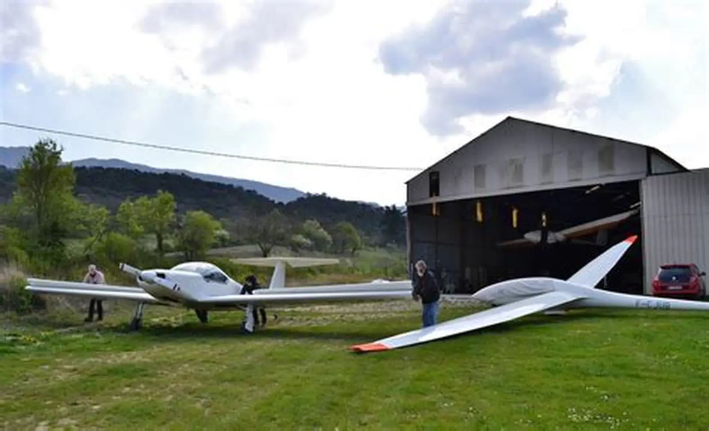
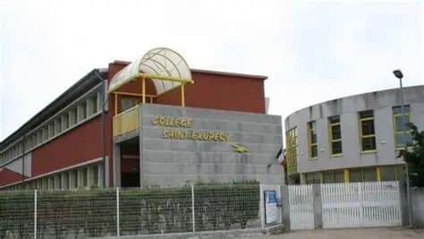
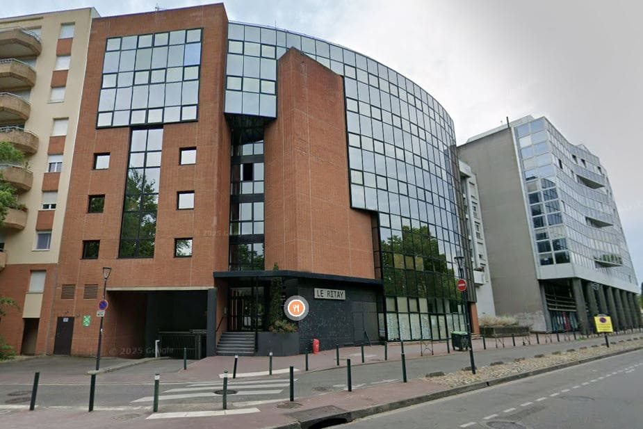

EXPÉRIENCES
Cette page présente un résumé de mon parcours académique et professionnel. Vous y trouverez mes diplômes, mes formations et les principales expériences que j’ai réalisées dans le cadre de mon parcours scolaire.

[Stage] Planeurs de Puivert
Avril 2021
J’ai effectué un stage d’une semaine aux Planeurs de Puivert où j’ai pu piloter des planeurs en double commande. Avant chaque vol, je m’informais sur les conditions météorologiques de la journée. Il y avait aussi une partie organisation importante avec la gestion du carnet de bord et du registre des vols. Je participais également à la communication entre les deux extrémités de la piste pour coordonner les décollages au treuil.

[Diplome] BIA Brevet International Aeronautique
2018-2021
De la 5ème à la 3ème, j’ai suivi l’option aéronautique au collège. J’y ai acquis les bases théoriques de la matière à travers différents thèmes comme la météo, les commandes de vol ou la navigation, ainsi que quelques projets pratiques. À la fin, j’ai obtenu le BIA avec la mention Assez Bien.

[Stage] Max Technologies
Janvier 2021
Lors de mon stage de 3ème chez Max Technologies, j’ai découvert les bases de l’informatique en C++, dans le cadre de l’ingénierie en systèmes embarqués. Cela m’a permis de comprendre comment la programmation s’intègre dans des projets techniques concrets. C’était une vraie opportunité dans un contexte où trouver un stage technique était difficile.
[Diplome] Baccalauréat
2021-2024
J’ai obtenu mon Baccalauréat avec la mention Assez Bien, avec les spécialités Sciences de l’Ingénieur et Mathématiques. Ces enseignements m’ont permis de développer mes compétences en analyse, en logique et en compréhension des systèmes techniques.